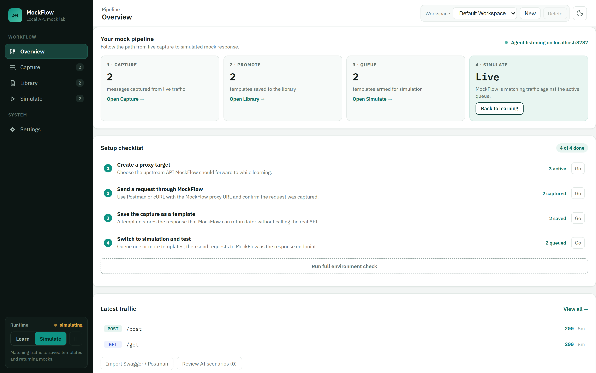
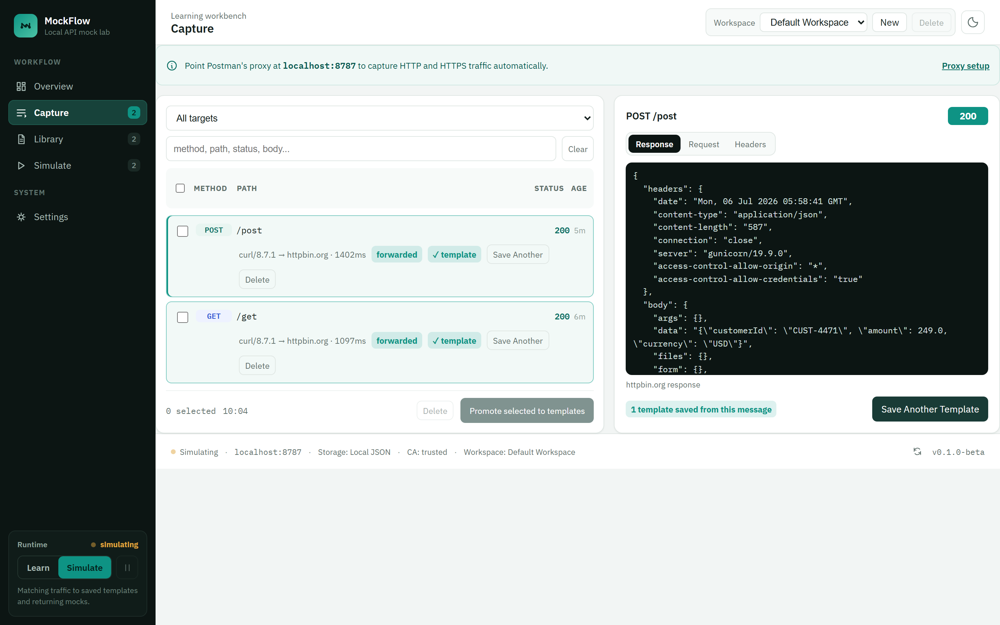
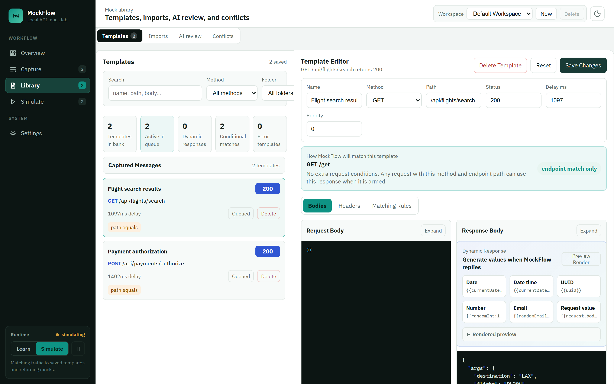
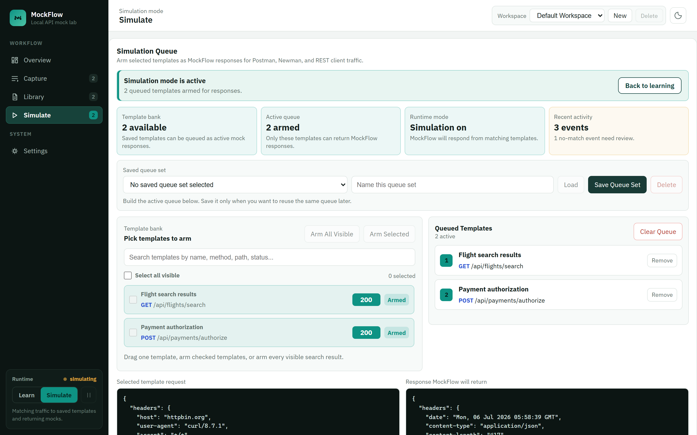

Back to portfolio
Localdesktop agent first
HTTP/Scapture and simulation
OpenAPIscenario generation
Postmantester workflow focus
Beta milestone reached:
MockFlow v0.1.0-beta has passed fresh Windows installer testing, HTTP/HTTPS capture, simulation, large payload, licensing, and release QA. Installer access is kept private and available on request.
API simulation workbench
MockFlow
A local-first API proxy and mock lab for capturing request/response traffic, promoting messages into editable templates, and simulating reliable API responses for Postman-driven testing.

Problem
API teams wait on systems that are not always ready.
Frontend teams, QA engineers, and integration testers often need predictable API responses before downstream services are stable, deployed, or even built. Hand-written mock JSON files work for small cases, but they become painful when the test flow needs headers, matching rules, edge cases, and captured real traffic.
What MockFlow solves
- Captures real request and response pairs in learning mode.
- Creates editable templates that can be reused across test runs.
- Lets testers queue only the templates they want active for a specific flow.
- Supports OpenAPI and Postman collection imports to speed up contract-first testing.
- Adds diagnostics so users can understand why a request matched or missed.
Case-study snapshot
Why this matters for API testing teams.
MockFlow is the tool I wanted when API test runs depended on services that were late, unstable, or hard to reset. It combines proxy behavior, tester-friendly controls, AI-assisted review, and release packaging into one local workflow.
Product ownership
Defined the workflow from learning mode to template promotion, queue-only simulation, diagnostics, and daily tester guidance.
Systems engineering
Implemented local HTTP/HTTPS capture, simulation matching, dynamic response rendering, large payload storage, SQLite/JSON persistence, and safe cleanup controls.
UX judgment
Built for QA users who may not be proxy experts: a guided setup checklist, an environment readiness check, Postman-focused instructions, activity diagnostics, and clear armed-template behavior.
Release readiness
Includes desktop-agent packaging work, redaction, local-first storage, purge controls, and public documentation that avoids source code and captured data.
Feature depth
Built as a tester workbench, not just a mock server.
Learning mode
MockFlow listens to traffic routed through the local agent and captures request metadata, headers, query fields, bodies, upstream response status, response headers, and response payloads.
Template editor
Users can edit method, path, status, delay, request fields, response fields, headers, matching rules, and dynamic response variables such as dates, UUIDs, random values, and request-derived fields.
Simulation queue
Saved templates can be armed in a queue so only selected endpoints respond from MockFlow. This supports controlled end-to-end flows while keeping the full template bank intact.
Queue-only matching
Simulation mode only responds from armed templates. If a matching template exists in the bank but was not queued, MockFlow shows a no-match diagnostic instead of silently returning the saved response.
Scenario intelligence
OpenAPI documents and captured workspace messages can generate reviewable scenarios, duplicate flags, coverage maps, and needs-edit indicators for inferred negative cases.
Large response handling
Very large payloads are stored outside the main workspace state so the UI stays usable. Users can page through large bodies for edits while simulation still returns the full response.
Postman workflow
MockFlow uses Postman and Newman as the request execution layer while the local agent provides the mock response engine and activity diagnostics.
Storage and safety
Local JSON and SQLite storage are supported, with sensitive field redaction, purge controls, workspace export/import, and explicit safety notes for public sharing.
Beta release status
0.1.0 beta is release-ready for controlled demos.
MockFlow has moved past prototype status into a private beta candidate. The current build is intended for controlled walkthroughs and recruiter discussions, not public open-source distribution.
Validated in beta QA
- Fresh Windows installer build and install.
- HTTP and HTTPS capture through Postman.
- Template promotion, editing, and armed simulation queue.
- No-match diagnostics and unarmed-template diagnostics.
- Large response handling and full-response simulation fidelity.
- Community, Team, and Enterprise beta edition gates.
Kept private by design
- Source code and installer artifacts are not published on this portfolio site.
- Captured traffic, API keys, certificates, local databases, and logs are excluded.
- Demo visuals use sanitized data and product screens only.
- Installer access is available on request for controlled review.
Post-beta roadmap
- Signed licensing or a license-server-backed entitlement model.
- Production-grade team/cloud sync beyond the current Convex scaffold.
- Signed/notarized macOS packaging.
- Deeper AI scenario quality tuning and provider cost handling.
Why local-first
MockFlow needs to sit between local tools like Postman and target APIs. A public hosted-only version would not capture local traffic reliably, so the product direction is a desktop/local agent first, with optional cloud sync later.
Product workflow
Four views, one capture-to-simulate pipeline.
MockFlow's dashboard was redesigned around the actual tester workflow instead of a flat feature list: Overview, Capture, Library, and Simulate. The public portfolio shows the workflow while captured traffic, certificates, tokens, and source code stay private.
Overview
A live pipeline view of capture, promote, queue, and simulate counts, a setup checklist backed by an environment readiness check, and a feed of the most recent traffic.

Capture
Captured API calls in a sortable traffic table, a tabbed Response/Request/Headers inspector, and the promote-to-template path used during learning mode.

Library
Templates, OpenAPI/Postman imports, AI-assisted scenario review, and matching-rule conflict resolution consolidated into one tabbed workspace.

Simulate
Arms only the templates a tester wants active for a focused Postman or Newman run, with dry-run diagnostics and a live activity feed showing matched, passthrough, and no-match events.
Architecture
Local proxy, browser dashboard, template engine.
The design keeps traffic capture local for privacy and practicality. The runtime that Postman talks to belongs on the tester machine, while the dashboard provides review, template editing, and simulation controls.
Postman / REST client
Routes requests through localhost.
Routes requests through localhost.
->
MockFlow local agent
Captures, forwards, or simulates.
Captures, forwards, or simulates.
Template bank
Saved responses and matching rules.
Saved responses and matching rules.
->
Simulation queue
Active mock set for the current test.
Active mock set for the current test.
OpenAPI / Postman imports
Create reviewable templates and scenarios.
Create reviewable templates and scenarios.
->
Review workflow
Approve, edit, flag duplicates, and promote.
Approve, edit, flag duplicates, and promote.
Setup and use
- Start the local MockFlow agent from the tray or PowerShell helper.
- Open the dashboard and run the environment readiness checks.
- Configure Postman to route traffic through the local proxy or use the `/proxy/host/path` URL style.
- Capture real traffic in learning mode and save useful messages as templates.
- Edit templates, matching rules, headers, and dynamic response fields.
- Switch to simulation mode, arm templates in the queue, and run Postman tests against MockFlow.
Tech stack
This page describes the product and architecture without exposing source code, captured traffic, certificates, tokens, or local workspace data.
Postman setup
Route requests through the local MockFlow agent.
Postman, Newman, cURL, or another REST client still sends the test traffic. MockFlow sits locally as the capture and simulation engine.
Proxy URL mode
Users can send requests through a local URL such as http://localhost:8787/proxy/httpbin.org/get when they want an explicit MockFlow path.
Forward proxy mode
Postman can be configured to use localhost and port 8787 as the proxy so normal API URLs can be routed through MockFlow.
HTTPS capture
For HTTPS bodies, the generated MockFlow CA certificate must be trusted in Postman or the operating system. The private key stays local and should never be shared.
Response proof
Simulation responses include MockFlow headers and activity entries so testers can confirm whether MockFlow responded, upstream was called, or a matching template was not armed.
Agent integration
An AI assistant can now test with MockFlow on its own — safely.
Most QA tools only work when a person is sitting there clicking through them. I built a connector so an AI coding assistant (like Claude) can drive MockFlow itself: look around, pick a test scenario, turn it on, and read back what happened. Think of it like handing a trusted assistant a remote control instead of a screwdriver — it can only press the buttons that are on the remote, and every button press gets written down automatically.
Why this is safe, not just clever
- The assistant can only do what MockFlow already does — no hidden shortcuts or special powers. (thin adapter)
- Every action has a plain, human-readable name, so it's always obvious what's being asked for. (namespaced tools)
- Just looking around is always safe. Anything that actually changes behavior is clearly flagged before it happens. (read-cheap / write-explicit)
- If something goes wrong, the assistant gets a plain-language explanation instead of a confusing crash. (normalized errors)
- Every single action is logged automatically — nothing the assistant does is invisible to the person who owns the environment. (audit trail)
What it can actually do
Six things the assistant is allowed to do — nothing more.
Check what's going on
Is MockFlow running? What mode is it in? How many test scenarios exist? This is always the first thing the assistant checks.
mockflow_status
See what test scenarios exist
Lists the saved test scenarios and lets the assistant read one in full detail before using it.
mockflow_list_scenarios · mockflow_get_scenario
Turn on a specific test scenario
changes behavior — always announced
Switches on a saved scenario, like "booking confirmation times out," so it's ready to be tested against.
mockflow_arm_scenario
Switch between recording and replaying
changes behavior — always announced
Flips MockFlow between capturing real traffic and replaying the scenario that was just turned on.
mockflow_set_mode
Look at what actually happened
Reads back the real requests and responses that were sent, so the assistant can confirm the test behaved as expected.
mockflow_get_traffic
Show its own work
Prints a full, timestamped list of every action it took — so a human can review exactly what the assistant did, after the fact.
mockflow_get_audit_summary
The demo above walks through a real airline scenario: an assistant testing how a booking app handles a reservation system that fails to confirm a seat in time. Technical name for this kind of connector: MCP (Model Context Protocol) — a shared rulebook that lets AI assistants and software tools talk to each other safely. Adapter source, like MockFlow's, is available on request for controlled review.
See it end-to-end
What a real session actually looks like
"MCP" sounds abstract until you watch it happen. Here's one real conversation, broken into the exact moves the assistant makes — no jargon required to follow along.
🗣️ “Claude, test how our booking app handles a reservation timeout.”
1
Checks what MockFlow already knows: is it running, what mode is it in, what test scenarios exist.
🔌 MCP tool
2
Turns on the “reservation times out” test and switches MockFlow into replay mode — both announced out loud as changes before they happen.
🔌 MCP tool
3
Runs the actual booking app (or a Postman collection) — the same real test a person would run, sending real requests through MockFlow.
💻 its own terminal
4
Reads back exactly what was sent and received, and reports what it found.
🔌 MCP tool
The key idea
MCP only covers the three 🔌 steps — it's the remote control, nothing more. Step 3, the 💻 one, is the assistant just using its own terminal, the same tool a person uses to run Postman or a test script. MCP doesn't replace testing tools or generate traffic — it just lets an assistant reach the same controls a human tester already had, safely and out loud.
Recording new traffic instead of replaying it works the same way, just in reverse: switch MockFlow to learning mode, run the same real requests through the proxy, then ask the assistant to look at what got captured and turn it into a reusable template.
Try it yourself
- Start MockFlow:
mockflow\scripts\start-mockflow.ps1 - Register the connector once:
claude mcp add --env MOCKFLOW_BASE_URL=http://localhost:8787 --transport stdio mockflow -- python mockflow_mcp_server.py - In any Claude Code session, just ask in plain language — “what mock scenarios exist in MockFlow?”, “arm the booking-confirmation-timeout scenario and test demo/app.py against it”, “show me the last 5 captured requests.” The assistant picks the right tools on its own.
Recruiter notes
What the MockFlow case study proves.
The public page focuses on product behavior and engineering choices that can be discussed safely without publishing implementation details, captured payloads, or local certificates.
Service virtualization thinking
The project models the full tester flow: capture, promote, edit, arm templates, simulate, and inspect why a request matched or missed.
Proxy reliability
HTTP/HTTPS capture, passthrough, queue-only simulation, no-match diagnostics, and certificate guidance.
Scenario review
OpenAPI, captured traffic, duplicate governance, needs-edit negative scenarios, and provider-aware AI refinement.
Usability for QA teams
Environment checks, Postman instructions, clear simulation queues, response proof headers, and safe data controls make the tool approachable for non-specialists.